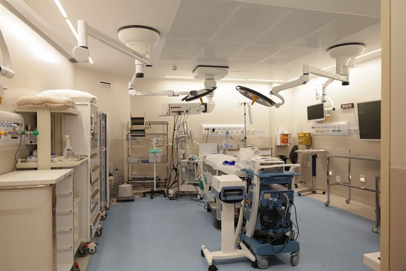

Especialidade
Coloproctologia e Cirurgia Geral
Diagnóstico e tratamento das doenças do intestino, do cólon, do reto e do ânus, com cirurgia minimamente invasiva e robótica.
A coloproctologia cuida das doenças do intestino grosso, do reto e do ânus, como hemorroidas, fissuras, fístulas, doenças inflamatórias intestinais e tumores colorretais. Na Paoliello Clinic, a especialidade é conduzida pela Dra. Marina Gimenez, cirurgiã geral e coloproctologista certificada em cirurgia robótica, com treinamento no St Mark's Hospital, em Londres.
As consultas e o acompanhamento acontecem na clínica, em ambiente reservado. Quando há indicação cirúrgica, o procedimento é realizado em hospital, com prioridade a técnicas videolaparoscópicas e robóticas, que reduzem o trauma cirúrgico e favorecem a recuperação.
- Consulta
- Na clínica, em ambiente reservado
- Cirurgias
- Em hospital, videolaparoscópicas e robóticas
- Certificação
- Cirurgia robótica, plataforma Da Vinci
- Equipe
- Dra. Marina Gimenez, cirurgiã geral e coloproctologista
Áreas de atuação
O que esta especialidade abrange.
Abra cada área para ver o que inclui e quem atende.
01Doenças orificiais
Dra. Marina Gimenez
Doenças orificiais
Dra. Marina GimenezHemorroidas, fissuras e fístulas anais: diagnóstico e tratamento clínico ou cirúrgico, com técnicas minimamente invasivas quando indicadas.
02Cólon e reto
Dra. Marina Gimenez
Cólon e reto
Dra. Marina GimenezInvestigação, acompanhamento e cirurgia de doenças inflamatórias intestinais e tumores colorretais.
03Cirurgia geral
Dra. Marina Gimenez
Cirurgia geral
Dra. Marina GimenezCirurgias abdominais com técnica videolaparoscópica ou robótica, quando indicadas.
Procedimentos
A indicação de cada procedimento depende de avaliação em consulta. Riscos, alternativas e recuperação são discutidos individualmente.
Procedimentos
Tratamento de hemorroidas
Dra. Marina Gimenez
Tratamento de hemorroidas
Dra. Marina GimenezDo tratamento clínico às técnicas cirúrgicas minimamente invasivas, conforme o grau e os sintomas.
Fissura e fístula anal
Dra. Marina Gimenez
Fissura e fístula anal
Dra. Marina GimenezDiagnóstico e tratamento clínico ou cirúrgico, com atenção à preservação da função.
Cirurgia colorretal videolaparoscópica e robótica
Dra. Marina Gimenez
Cirurgia colorretal videolaparoscópica e robótica
Dra. Marina GimenezCirurgias do cólon e do reto por vídeo ou com plataforma robótica, em ambiente hospitalar.
Cirurgia geral minimamente invasiva
Dra. Marina Gimenez
Cirurgia geral minimamente invasiva
Dra. Marina GimenezProcedimentos abdominais com técnica videolaparoscópica ou robótica, conforme indicação.
Onde acontece
Na clínica
Consultas e acompanhamento
- Consulta e avaliação
- Acompanhamento pré e pós-operatório
No hospital
Cirurgias
- Cirurgias videolaparoscópicas e robóticas, realizadas em ambiente hospitalar
Quem atende

Consultas com hora marcada. Pacientes das demais especialidades da clínica são encaminhados internamente, sem recomeçar a história.
Como começar
O primeiro passo é uma consulta.
Diga a especialidade de interesse e encontramos um horário. Quem vem de outra cidade ou país pode começar por uma avaliação online.